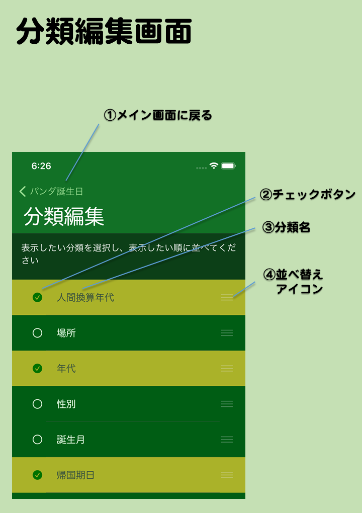

- 分類編集画面とは
- メイン画面で分類編集画面ボタンをタップして移動してくる画面です。メイン画面で表示したい分類を選んだり、分類の表示順序を変更したりできます。
- 分類とは
- メイン画面の情報をグループ分けするテーマです。分類に応じて情報の並べ替えも行われます。
- 画面の説明
- ①メイン画面に戻る
- 編集を確定し、メイン画面に戻ります。
- ②チェックボタン
- 該当の分類の選択状態を示します。チェックがついているときはメイン画面で表示できます。
- ③分類名
- 分類の名前です
- ④並べ替えアイコン
- このアイコンをドラッグすると分類を上下に移動して並べ替えられます。この順序がメイン画面で分類を切り替え表示する順序です。
- 分類の説明
-
- 場所
- 現住地もしくはイベントの場所で分類します
- 年代
- 誕生日もしくはイベント日で分類します。情報は未来から過去の順に並びます
- 人間換算年代
- パンダの年齢を人間の年齢に換算して分類します。情報は未来から過去の順に並びます
- 誕生月
- 誕生日もしくはイベントの月で分類します。情報は１月から１２月の順に並びます
- 帰国期日
- パンダの中国への帰国期日で分類します。期日が未定な場合は近日中なら近々、それ以外は未定に分類されます
- 性別
- 性別で分類します
- 種別
- パンダ、人間、その他で分類します
- お気に入り
- お気に入りに入っているか入っていないかで分類します。まだお気に入りに入っていない情報を連続してお気に入りに入れたい時などに使います
- 編集可
- 編集可能なユーザー登録データかそれ以外かで分類します